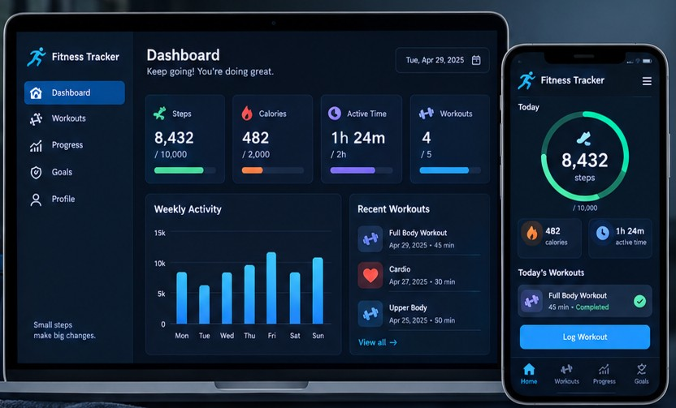

Fitness Tracker
A fitness tracking application that helps users monitor workouts, record exercise sessions, and track their progress over time.
Project Overview
The Fitness Tracker was created to help users maintain a consistent workout routine by keeping records of exercises, workout durations, and fitness goals. The application provides an organized way to view activity history and monitor personal improvement.
Key Features
- Workout Logging
- Exercise History Tracking
- Fitness Goal Management
- Progress Monitoring
Technologies Used
Java, HTML, CSS
What I Learned
Through this project, I practiced designing user-focused interfaces and organizing information in a clear and accessible format. I also improved my skills in HTML and CSS by creating responsive layouts, structured content, and consistent visual styling across multiple pages.